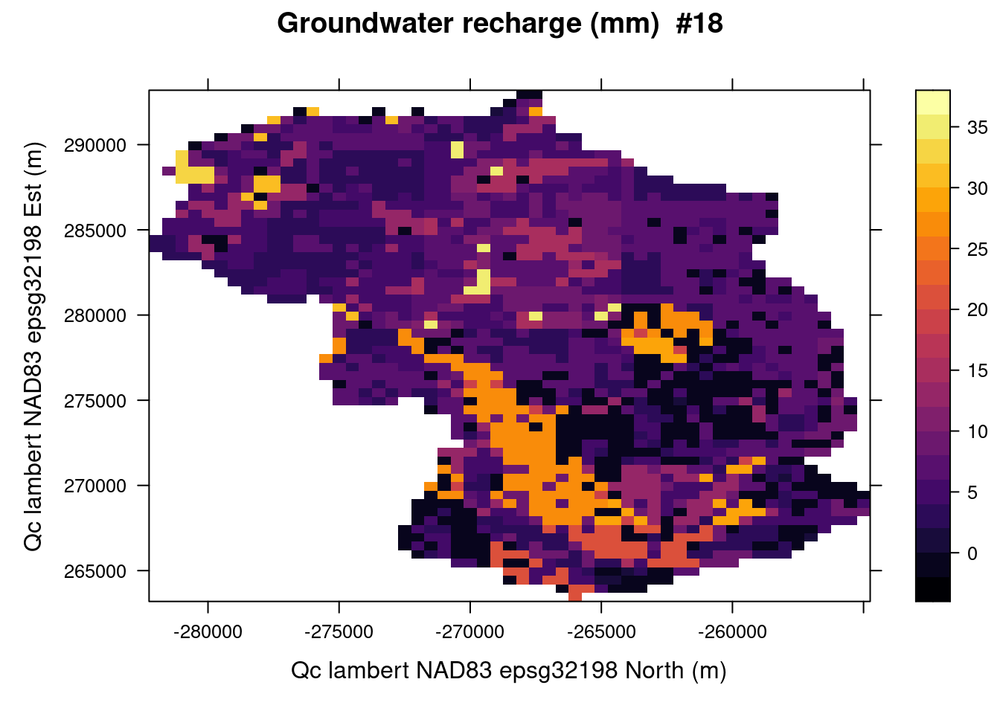

Chapter 5 Example
Load the rechaRge library.
5.1 HydroBudget model
5.1.1 Input data and parameters
Load the input data for the simulation.
base_url <- "https://github.com/gwrecharge/rechaRge-book/raw/main/examples/input/"
input_rcn <- paste0(base_url, "rcn.csv.gz") # RCN values per RCN cell ID
input_climate <- paste0(base_url, "climate.csv.gz") # precipitation total in mm/d per climate cell ID
input_rcn_climate <- paste0(base_url, "rcn_climate.csv.gz") # relation between climate and RCN cell IDs
input_rcn_gauging <- paste0(base_url, "rcn_gauging.csv.gz") # relation between gaugins station and RCN cell IDs
input_observed_flow <- paste0(base_url, "observed_flow.csv.gz") # flow rates in mm/d
input_alpha_lyne_hollick <- paste0(base_url, "alpha_lyne_hollick.csv.gz")Set the HydroBudget model with the parameters values:
HB <- rechaRge::new_hydrobugdet(
T_m = 2.1, # melting temperature (°C)
C_m = 6.2, # melting coefficient (mm/°C/d)
TT_F = -17.6, # Threshold temperature for soil frost (°C)
F_T = 16.4, # Freezing time (d)
t_API = 3.9, # Antecedent precipitation index time (d)
f_runoff = 0.63, # Runoff factor (-)
sw_m = 431, # Maximum soil water content (mm)
f_inf = 0.07 # infiltration factor (-)
)Set the column names mappings matching the input datasets:
HB$rcn_columns <- list(
rcn_id = "cell_ID",
RCNII = "RCNII",
lon = "X_L93",
lat = "Y_L93"
)
HB$climate_columns$climate_id <- "climate_cell"
HB$rcn_climate_columns <- list(
climate_id = "climate_cell",
rcn_id = "cell_ID"
)
HB$rcn_gauging_columns <- list(
rcn_id = "cell_ID",
station_id = "gauging_stat"
)
HB$alpha_lyne_hollick_columns$station_id <- "station"Set the simulation period:
5.1.2 Simulation
Compute the water budget using the HydroBudget model:
water_budget <- rechaRge::compute_recharge(
HB,
rcn = input_rcn,
climate = input_climate,
rcn_climate = input_rcn_climate,
period = simul_period
)The water budget data set is per year-month in each RCN cell:
vi, the vertical inflowt_mean, the mean temperaturerunoff, the runoffpet, the potential evapotranspirationaet, the actual evapotranspirationgwr, the ground water rechargerunoff_2, the excess runoff
The head of this data set is:
| year | month | vi | t_mean | runoff | pet | aet | gwr | runoff_2 | delta_reservoir | rcn_id |
|---|---|---|---|---|---|---|---|---|---|---|
| 2010 | 1 | 28.2 | -7.3 | 21.5 | 1.6 | 1.6 | 10.2 | 0 | -5.1 | 62097 |
| 2010 | 2 | 27.9 | -5.7 | 7.9 | 4.6 | 4.6 | 8.8 | 0 | 6.6 | 62097 |
| 2010 | 3 | 83.0 | 1.0 | 30.8 | 19.5 | 19.5 | 16.1 | 0 | 16.6 | 62097 |
| 2010 | 4 | 68.2 | 7.7 | 24.9 | 51.5 | 51.5 | 15.1 | 0 | -23.3 | 62097 |
| 2010 | 5 | 46.9 | 13.8 | 3.8 | 94.7 | 73.8 | 4.4 | 0 | -35.2 | 62097 |
| 2010 | 6 | 107.9 | 17.0 | 33.3 | 114.7 | 81.1 | 0.2 | 0 | -6.7 | 62097 |
5.1.4 Results handling
Save the simulation results:
sim_dir <- file.path(tempdir(), paste0("simulation_HydroBudget_", format(Sys.time(), "%Y%m%dT%H_%M")))
# Write output files
# CSV
rechaRge::write_recharge_results(HB, water_budget, output_dir = sim_dir)
# NetCDF
rechaRge::write_recharge_results(HB, water_budget, output_dir = sim_dir, format = "nc", input_rcn = input_rcn, names = list(
"lon" = list(
longname = "Qc lambert NAD83 epsg32198 Est",
unit = "m"
),
"lat" = list(
longname = "Qc lambert NAD83 epsg32198 North",
unit = "m"
)
))
# Rasters
rechaRge::write_recharge_rasters(
HB,
water_budget = water_budget,
input_rcn = input_rcn,
crs = "+proj=lcc +lat_1=60 +lat_2=46 +lat_0=44 +lon_0=-68.5 +x_0=0 +y_0=0 +ellps=GRS80 +datum=NAD83 +units=m +no_defs",
output_dir = sim_dir
)
# List simulation output files
list.files(sim_dir)## [1] "bilan_spat_month.csv" "bilan_unspat_month.csv"
## [3] "interannual_aet_NAD83.tif" "interannual_gwr_NAD83.tif"
## [5] "interannual_runoff_NAD83.tif" "water_budget.nc"5.1.5 Data visualization
Visualize the saved NetCDF file:
library(ncdf4)
library(lattice)
library(viridisLite)
# Extract GWR data
nc <- nc_open(file.path(sim_dir, "water_budget.nc"))
gwr <- ncvar_get(nc, "gwr")
gwratt <- ncatt_get(nc, "gwr")
lon <- ncvar_get(nc, "lon")
lonatt <- ncatt_get(nc, "lon")
lat <- ncvar_get(nc, "lat")
latatt <- ncatt_get(nc, "lat")
time <- ncvar_get(nc, "time")
nc_close(nc)
# Render the 18th month
month <- 18
gwr1 <- gwr[,,month]
grid <- expand.grid(lon=lon, lat=lat)
title <- paste0(gwratt$long_name, " (", gwratt$units, ") ", " #", month)
xlab <- paste0(latatt$long_name, " (", latatt$units, ")")
ylab <- paste0(lonatt$long_name, " (", lonatt$units, ")")
levelplot(gwr1 ~ lon * lat, data=grid, pretty=T, col.regions=inferno(100),
main=title, xlab=xlab, ylab=ylab)
Visualize the saved raster files:
library(tidyterra)
library(terra)
library(ggplot2)
library(cowplot)
subtitle <- ifelse(simul_period[1] == simul_period[2],
paste0("In ", simul_period[1]),
paste0("From ", simul_period[1], " to ", simul_period[2])
)
runoff <- terra::rast(file.path(sim_dir, "interannual_runoff_NAD83.tif"))
runoffplot <- ggplot() +
geom_spatraster(data = runoff) +
scale_fill_viridis_c(option = "inferno") +
labs(
fill = "",
title = "Runoff",
subtitle = subtitle
)
aet <- terra::rast(file.path(sim_dir, "interannual_aet_NAD83.tif"))
aetplot <- ggplot() +
geom_spatraster(data = aet) +
scale_fill_viridis_c(option = "inferno") +
labs(
fill = "",
title = "Actual Evapotranspiration",
subtitle = subtitle
)
gwr <- terra::rast(file.path(sim_dir, "interannual_gwr_NAD83.tif"))
gwrplot <- ggplot() +
geom_spatraster(data = gwr) +
scale_fill_viridis_c(option = "inferno") +
labs(
fill = "",
title = "Ground Water Recharge",
subtitle = subtitle
)
cowplot::plot_grid(runoffplot, aetplot, gwrplot)